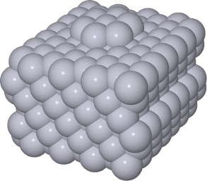
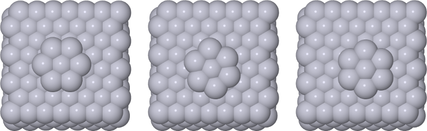

AKMC Tutorial¶
You can find a sample setup for the AKMC method in the examples/akmc-pt directory of your copy of eon. The system is a Pt heptamer island on a Pt(111) surface:

If you have already compiled your client, go to the examples/akmc-pt directory and run Eon:
$ ../../bin/eon
state list path does not exist, creating .//states/
registering results
0 (result) searches processed
Approximately 0 (result) searches discarded.
0 searches in the queue
making 2 process searches
job finished in .//jobs/scratch/0_1
job finished in .//jobs/scratch/0_0
2 searches created
currently in state 0 with confidence 0.000000
Each time you run EON, the server registers results from the previous execution. The first time the EON server is run, there are no results to register. Two saddle searches are executed, but their results will only be registered on the next execution of EON. You can see this by looking at the search_results.txt file in your states directory:
$ cat states/0/search_results.txt
wuid type barrier max-dist sad-fcs mins-fcs pref-fcs result
-------------------------------------------------------------------------------------
It’s empty. We can register the results of the first execution of EON by running the server again:
$ ../../bin/eon
registering results
found new lowest barrier 1.615476 for state 0
2 (result) searches processed
Approximately 0 (result) searches discarded.
0 searches in the queue
making 2 process searches
job finished in .//jobs/scratch/0_3
job finished in .//jobs/scratch/0_2
2 searches created
currently in state 0 with confidence 0.000000
Now we should have some results:
$ cat states/0/search_results.txt
wuid type barrier max-dist sad-fcs mins-fcs pref-fcs result
-------------------------------------------------------------------------------------
1 random 0.00000 0.00000 383 219 0 Not Connected
0 random 1.61548 0.00000 421 201 378 good-0
The search_results.txt file provides information about how a particular job went. The data collected is contained in the processtable file in the state directory:
$ cat states/0/processtable
proc # saddle energy prefactor product product energy product prefactor barrier rate repeats
0 -1774.17568 9.98760e+13 -1 -1774.97273 1.33950e+13 1.61548 2.33649e+02 0
You can find the files relevant to a process in the procdata directory of a given state:
$ ls states/0/procdata
mode_0.dat product_0.con reactant_0.con results_0.dat saddle_0.con
The data relevant to process 0 is in the process table. The figures below show the reactant, saddle, and product configurations for this process:

Subsequent runs of EON will show an increasing confidence as the event table (in the specified energy window) becomes complete. To speed up the process, you can change the “num_jobs” tag under the AKMC section of the config.ini file:
currently in state 0 with confidence 0.313698
...
currently in state 0 with confidence 0.641981
...
currently in state 0 with confidence 0.675757
Eventually, the simulation will reach the required confidence and take a KMC step to the next state:
$ eon
registering results
1 (result) searches processed
Approximately 1 (result) searches discarded.
cancelled 0 workunits from state 0
kmc step from state 0 through process 3 to state 1
currently in state 1 with confidence 0.000000
This is reflected in the dynamics.txt file of the simulation directory:
$ cat dynamics.txt
step-number reactant-id process-id product-id step-time total-time barrier rate
---------------------------------------------------------------------------------------------------------------
0 0 3 1 8.976889e-10 1.049672e-09 0.601060 3.930510e+08